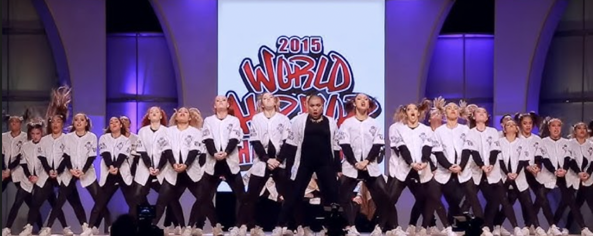
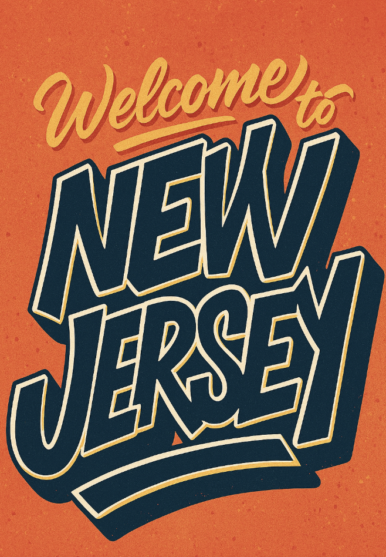
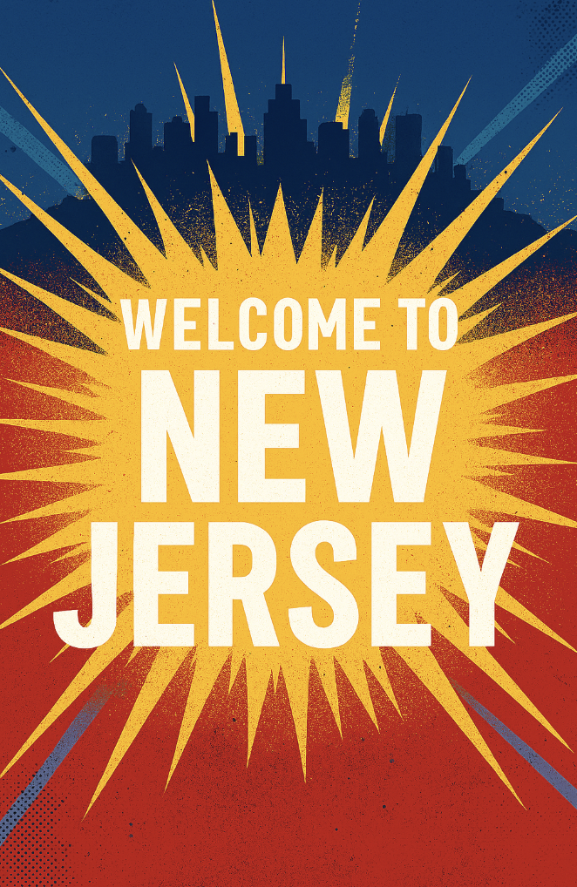
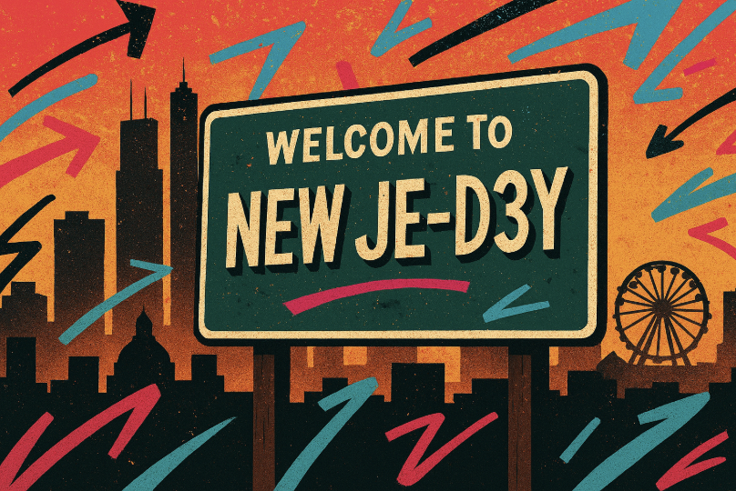
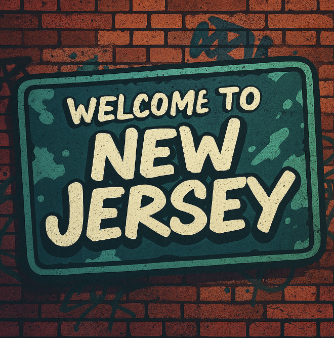
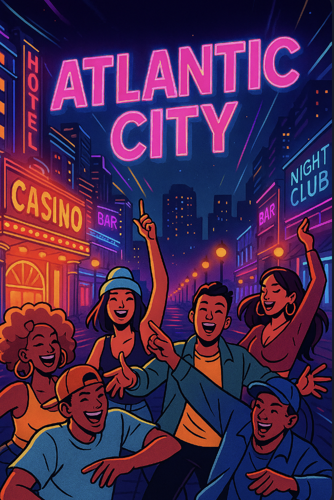

Creativity is a crucial component of human cognition! We intertwine logic, reason, and creativity to approach challenges every day, but sometimes we hit a roadblock and need a little bit of help. I’m choreographing a dance piece for a road trip-themed performance this semester; my theme is NJ, but I’m having trouble identifying songs that are either about NJ or written by an artist who is from NJ. Let’s see if an LLM can help me identify songs that fit my musical and dance styles!
Prompt:
I’m choreographing a 3.5-minute dance for my hip-hop group’s show. The show is roadtripped theme, and my dance focuses on NJ. I’m creating a mix of three songs that captures the energetic vibe of NJ, Atlantic Cty, and the Jersey club scene. Help me identify songs that would be appropriate for this theme.
Response:
That’s such a fun concept — a New Jersey–themed dance within a “road trip” show, where your section embodies the energy, grit, and club culture of NJ! Since you’re doing a hip-hop piece and want to highlight Atlantic City + Jersey club vibes, we can blend modern Jersey club tracks, classic NJ references, and high-energy East Coast hip-hop.
Here are some song ideas you could mix and match to build a 3.5-minute track that flows from a “welcome to Jersey” intro → club energy → grand Atlantic City finale.
🔊 1. Intro — “Welcome to New Jersey” (0:30–0:45)
Set the scene like you’ve just “arrived” in NJ.
“Livin’ on a Prayer” – Bon Jovi (spoken intro or first hook) → iconic NJ rock band. You could distort or remix it for a clever sample.
Sound FX: Highway sounds, GPS saying “Entering New Jersey,” toll booth beeps, etc.
Alternative: Use a quick vocal clip like “Welcome to New Jersey” or something referencing the Garden State.
🎧 2. Jersey Club Energy Section (1:00–2:00)
This is your core: fast-paced, bouncy, footwork-heavy section that screams Newark / Jersey club culture.
Modern Jersey Club artists & remixes:
UNIIQU3 – “Microdosing” / “Phase 3” / “Trunk”
DJ Sliink – “Put Cha Back In It” / “Higher”
Cookiee Kawaii – “Vibe (If I Back It Up)” (TikTok hit but pure Jersey club DNA)
Bandmanrill – “Real Hips” or “Fifty” (Jersey club + drill fusion)
Coi Leray – “Players” (DJ Smallz 732 Jersey Club Remix) – perfect nod to a NJ artist.
DJ Jayhood – “Heartbroken” (Jersey Club Remix) – an OG club anthem.
🎰 3. Atlantic City / Boardwalk Energy (2:00–3:00)
Glamorous but gritty casino-city vibe — think flashy, confident, hip-hop swagger.
Fetty Wap – “Trap Queen” (Patterson, NJ native; recognizable, fun)
Redman – “Let’s Get Dirty” or “Tonight’s Da Night” (classic NJ hip-hop energy)
Queen Latifah – “U.N.I.T.Y.” (if you want a nod to NJ hip-hop royalty)
Lizzo – “2 Be Loved (Am I Ready)” (Jersey Club Remix) — adds pop appeal + danceable bounce.
You could even sample casino sounds (slot machines, dice rolls, chips clinking) in the transitions.
🏁 4. Finale / Outro (3:00–3:30)
Wrap it up with a “party still going” energy or a nod back to the road trip.
Whitney Houston – “I Wanna Dance with Somebody” (Jersey Club Remix) → powerhouse NJ icon, joyful close.
Or a Bon Jovi “It’s My Life” Jersey Club Remix (plenty exist) for a fun, full-circle moment.
Prompt:
this style of this dance is hip hop and my choreography style is fast and high energy. i don’t think bon jovi or whitney houston fit this. i also want the order to be “welcome to new jersey, atlantic city, finish with jersey club. can you adjust your recommendations accordingly.
Response:
- WELCOME TO NEW JERSEY (≈ 1:00 min)
Mood: Arrival energy — tough, confident, “we’re here” East Coast attitude. This section sets the tone: urban, sharp, bass-heavy.
Possible tracks / samples:
🎵 Redman – “Time 4 Sum Aksion” (iconic Newark MC; explosive start energy)
🎵 NLE Choppa – “Do It Again” (ft. 2Rare) – includes Jersey club influence but hits like hip-hop.
🎵 Latto – “Put It on Da Floor Again” (clean) – good hype entry track for strong movement.
🎵 Fivio Foreign ft. Kanye West & Alicia Keys – “City of Gods” – NYC/East Coast tone, dramatic entrance feel.
🎵 Audio clip idea: “Welcome to New Jersey” highway sign / toll booth / car sounds layered in the intro.
💡 Use an East Coast street sound here — something that feels like stepping out of the car and onto Jersey pavement.
🎰 2. ATLANTIC CITY (≈ 1:00–1:15 min)
Mood: Flashy, money, nightlife, casino-city glam — big swagger, confident, stylish hip-hop groove. Think lights, dice, money — the “show-off” part of the routine.
Possible tracks:
🎵 Fetty Wap – “679” or “My Way” – iconic NJ hit, smooth & confident.
🎵 Cardi B – “Money” – fits the casino/cash theme perfectly.
🎵 Saweetie – “Fast (Motion)” – has that upbeat, glam hip-hop tempo.
🎵 Nicki Minaj – “Barbie Dangerous” (or “Super Freaky Girl”) – adds shine and feminine power if that fits your vibe.
🎵 Transition idea: Layer in casino SFX — dice rolling, slot machine “ding ding ding” → hit your next beat drop.
💡 This section is all about controlled power and swagger — less footwork, more body control and precision.
🔊 3. JERSEY CLUB FINALE (≈ 1:15–1:30 min)
Mood: Explosive, bouncy, local pride — this is the turn-up moment, the part where the crowd screams. Use recognizable Jersey club sounds (chops, kicks, “bed squeak,” callouts).
Possible tracks:
🎵 UNIIQU3 – “Trunk” / “Phase 3” / “Microdosing” – authentic Jersey club energy.
🎵 Cookiee Kawaii – “Vibe (If I Back It Up)” (Remix) – crowd-friendly, iconic.
🎵 Bandmanrill – “Real Hips” or “Mr. D.C.T.” – drill-club crossover for a hard-hitting close.
🎵 DJ Sliink & Nadus – “Higher” – for a clean, energetic instrumental finish.
🎵 DJ Jayhood – “Heartbroken (Club Remix)” – classic club bounce to end strong.
💡 Finish on a bold beat stop or a vocal tag like “Jerzzz!” / “Brick City!” / “Let’s go Jersey!”
Prompt:
i like some of these songs, but artists like cardib and nicki minaj are notable from ny, can i get artists or songs that are still popular but whose association with other states aren’t as commonly known
Response:
🔹 SECTION 1: “WELCOME TO NEW JERDEY” (0:00–1:00)
Mood: gritty, powerful, arrival energy — think stepping off the turnpike ready to show out.
Song ideas
Bandmanrill – “Real Hips” (or “Fifty”) Jersey artist, club-drill hybrid; perfect to set an energetic tone right away.
Lil Uzi Vert – “Just Wanna Rock” Technically Philly, but the track went viral for its Jersey Club sound — crowds associate it with the Jersey movement more than PA.
Tate Kobang – “Bank Rolls (Remix)” (Jersey Club Edit) High-tempo East Coast energy, and not regionally “claimed” by a specific city.
DJ Smallz 732 – “Put Your Hands Where My Eyes Can See” (Jersey Club Remix) Classic hip-hop sample + Jersey remix energy — instantly sets local tone.
💡 Transition idea: Use a toll booth or GPS voice saying, “Now arriving in New Jersey…” under your intro beat.
🔹 SECTION 2: “ATLANTIC CITY” (1:00–2:15)
Mood: glamorous hip-hop — confidence, luxury, casino and nightlife energy — but still danceable.
Song ideas
Fetty Wap – “679” or “My Way” Patterson, NJ native; catchy and recognizable without being overexposed now.
Coi Leray – “Players (DJ Smallz 732 Remix)” Coi’s from New Jersey, and this remix gives you an energetic but clean groove.
Saweetie – “Closer (feat. H.E.R.) [Jersey Club Remix]” Smooth but upbeat — works for a classy “Atlantic City” aesthetic.
Lola Brooke – “Don’t Play With It (Remix)” (clean) While she’s NYC, her sound doesn’t scream it — it’s high-energy and fits a bold, nightlife vibe.
Latto – “Big Energy (Jersey Club Remix)” No strong state association, and the remix adds that upbeat bounce.
💡 Transition idea: Slot machine or poker chip sounds layered under the build to the next drop.
🔹 SECTION 3: “JERSEY CLUB FINALE” (2:15–3:30)
Mood: explosive, dance-heavy, pure NJ club energy. This is the showcase section.
Song ideas
UNIIQU3 – “Trunk” / “Phase 3” / “Body Move” Queen of Jersey Club; these have that perfect bounce for intricate footwork.
DJ Sliink – “Higher” or “Put Cha Back In It” Classic, authentic club sound — great for the final build.
Cookiee Kawaii – “Vibe (If I Back It Up)” [Remix] Iconic TikTok Jersey moment that’s instantly recognizable.
DJ Jayhood – “Heartbroken (Club Remix)” OG club anthem — finish strong with nostalgic Jersey energy.
Truthfully, I’m not a fan of any of these suggestions. The LLM did consider my feedback and adjusted its recommendations accordingly, introducing songs that fit the hip-hop style and theme, but I do not think they would work well in this show. I wonder if providing a list of songs we’ve used in the past, as well as information on the expected audience demographics, would affect the suggestions.
Let’s see if the LLM would be better at creating themed graphics!
Prompt:
Generate images that capture the vibe of this dance that I can use for a background projection while the dancers are on stage
  
I don’t like any of these…perhaps a little more guidance/detail will help the LLM to better understand my vision.
Prompt:
Can you create something that captures a more hip-hop, urban, or Atlantic City casino vibe

Still not loving it…
Prompt:
Can you make a visual with people having fun, party vibe

Better!!
Although the LLM couldn’t completely capture my vision, it did help me to cancel some ideas and push my thinking forward. This dance is a masterpiece in the making!!